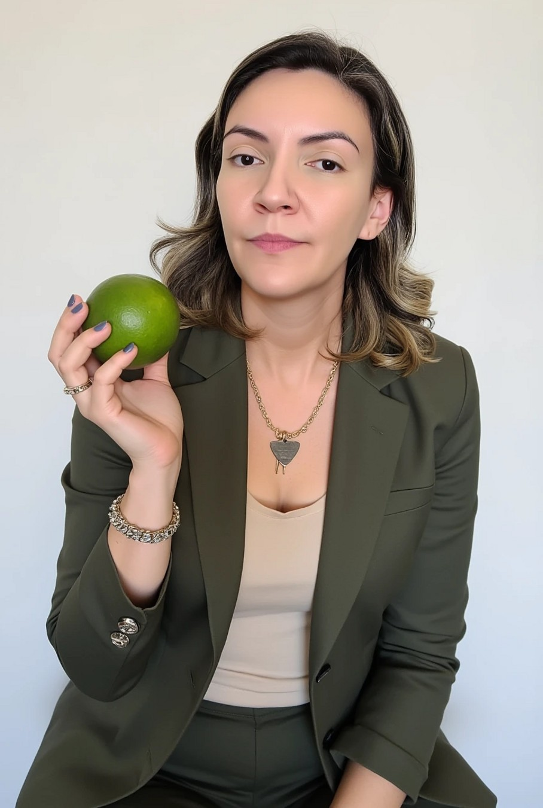
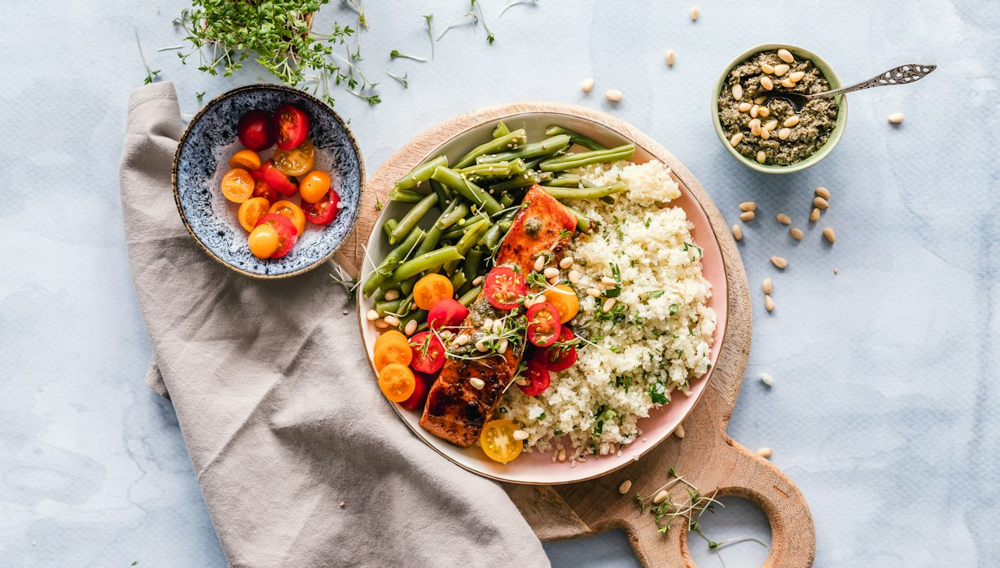

Nutrição tradicional
Foca apenas no que você deve comer.
Nutrição comportamental · Online
Emagrecimento leve, estratégico e possível de manter, sem dietas impossíveis e sem terrorismo nutricional.

Sobre mim
Sou nutricionista há mais de 14 anos, com experiência em emagrecimento, comportamento alimentar e promoção de hábitos saudáveis de forma leve e sustentável. Atuei em hospitais, projetos de saúde, grupos de emagrecimento e acompanhamento nutricional individualizado.
Minha abordagem vai além de dietas restritivas. O emagrecimento saudável acontece quando existe equilíbrio, estratégia e consciência alimentar.
Uno conhecimento técnico, experiência prática e uma visão humanizada para ajudar cada paciente a construir resultados possíveis de manter a longo prazo.
Jéssica Ferreira · Nutricionista · CRN-3 00000
Abordagem
A nutrição comportamental vai além de uma dieta: busca entender sua relação com a comida, seus hábitos, emoções e gatilhos.
Foca apenas no que você deve comer.
Ajuda você a desenvolver equilíbrio, consciência alimentar e uma rotina sustentável, sem culpa e sem efeito sanfona.
Programas e acompanhamento
Cada pessoa tem uma história e dificuldades diferentes. Por isso o acompanhamento vai muito além de “passar dieta”.
Para quem quer emagrecer de forma leve, possível e sustentável, criando constância e melhorando a relação com a alimentação.
Um método prático para emagrecer com equilíbrio, sem dietas radicais ou promessas irreais.
Para reduzir o inchaço e retomar hábitos saudáveis de forma prática e leve.

Material gratuito
Entenda como, com ações simples, você pode mudar seus hábitos alimentares e transformar sua rotina.
Baixar gratuitamenteDicas
Ela aumenta a saciedade, ajuda a preservar massa muscular e reduz os episódios de belisco.
Pular refeições ou fazer dietas extremamente restritivas só aumenta a fome e a chance de exageros.
O que está fácil, você consome mais. Deixe opções práticas e nutritivas à vista e reduza gatilhos.
Poucas horas de sono aumentam a fome, pioram a ansiedade e dificultam o controle alimentar.
O emagrecimento sustentável vem de hábitos possíveis de manter na rotina real.
Uma refeição fora do planejado não define o seu resultado. O que atrasa é abandonar a rotina por culpa.
Pequenas vitórias diárias transformam a motivação em constância.
Quanto mais culpa, maior a chance de compulsão e efeito sanfona. Alimentação saudável também precisa ser leve.
Depoimentos
Comentários retirados do Google.
Quero agradecer pelo profissionalismo e por montar um plano que realmente funciona para o meu estilo de vida. Finalmente sinto que estou no caminho certo!
Fiz a consultoria com a nutricionista Jéssica e foi maravilhosa! Simplicidade, sem restrição e com realidade! Recomendo sempre o trabalho da Jéssica!
Dúvidas
Sim. Os acompanhamentos são feitos de forma online, com encontros por vídeo e suporte pelo WhatsApp.
No individual, o plano é totalmente personalizado, com suporte exclusivo. No grupo, você tem um método prático e acessível, orientação profissional e a motivação de quem vive o mesmo processo.
Não. A proposta é equilíbrio e consciência alimentar, sem restrições extremas.
É só chamar no WhatsApp ou preencher o formulário abaixo. Eu retorno com os próximos passos.
Contato
Conte um pouco sobre você e eu retorno pelo WhatsApp. Seu corpo funciona como uma engrenagem: os alimentos abastecem, os hábitos direcionam os resultados e a nutrição ajuda tudo a trabalhar em equilíbrio.